Role & Contribution
Job Role
Uncle Long works as a tour guide at Gua Kelam. His main responsibility is to guide visitors safely through the cave while ensuring they have an enjoyable and meaningful experience.
He explains the cave’s features, environment, and shares interesting knowledge during the journey.
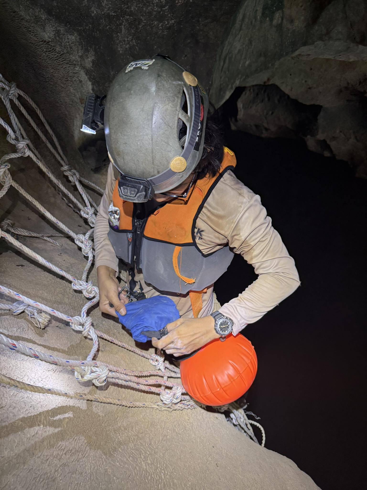
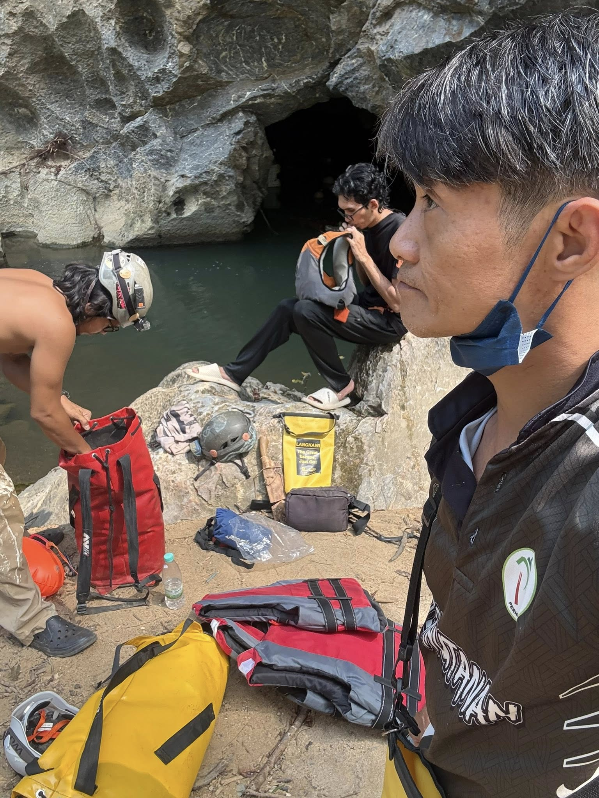
Contribution to Perlis
He plays an important role in promoting tourism in Perlis by introducing the beauty of Gua Kelam to both local and international visitors.
His work helps support the local community and increases awareness about nature and conservation.
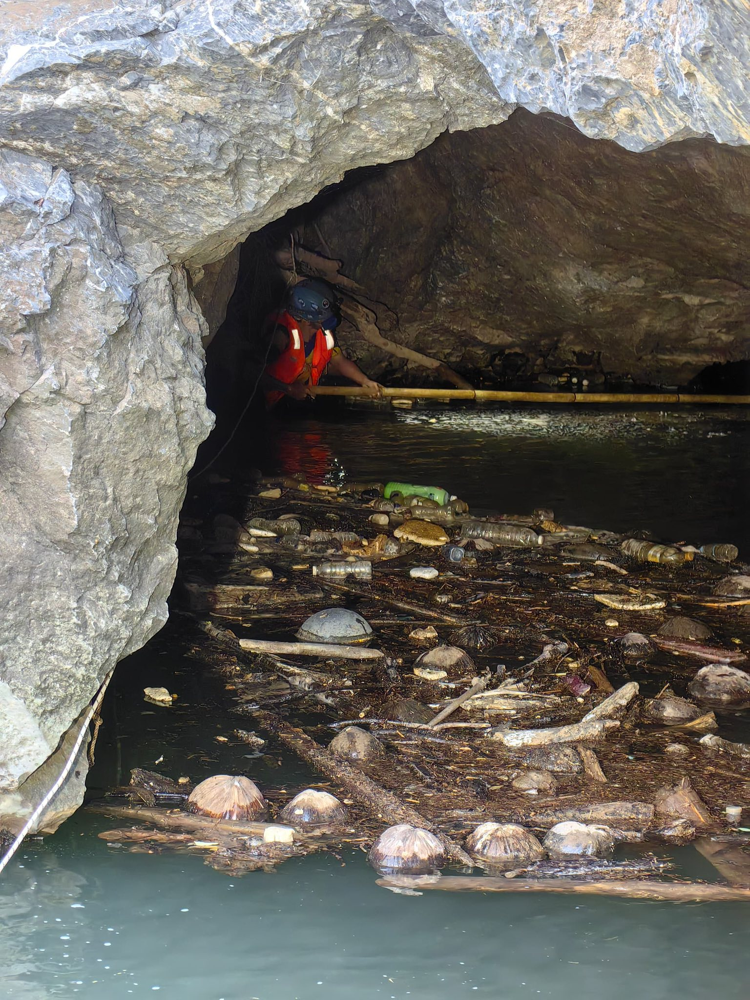
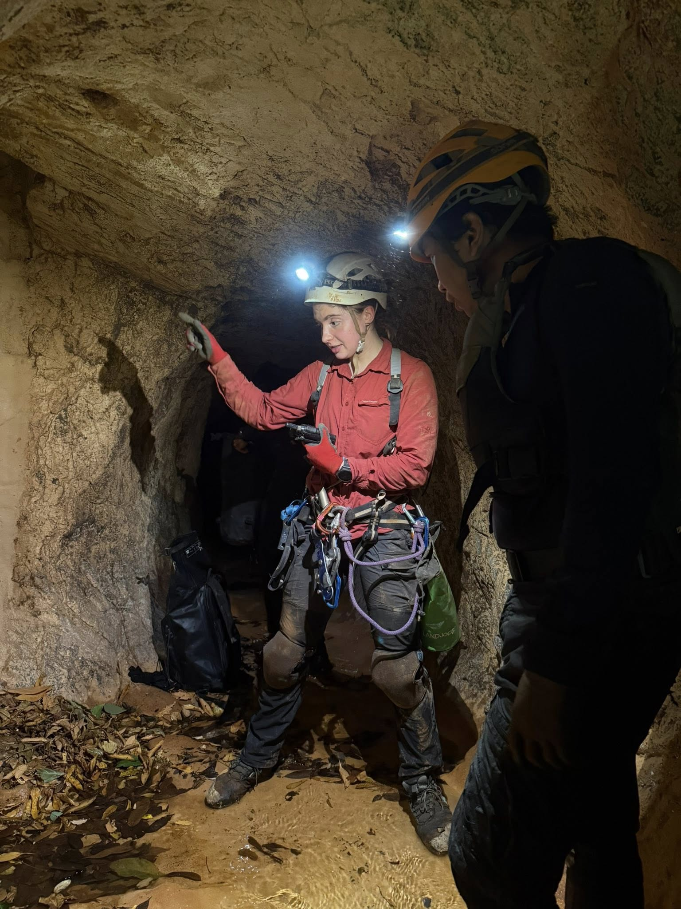
Skills
- Strong communication skills
- Knowledge of cave terrain and nature
- Friendly and responsible attitude
- High safety awareness
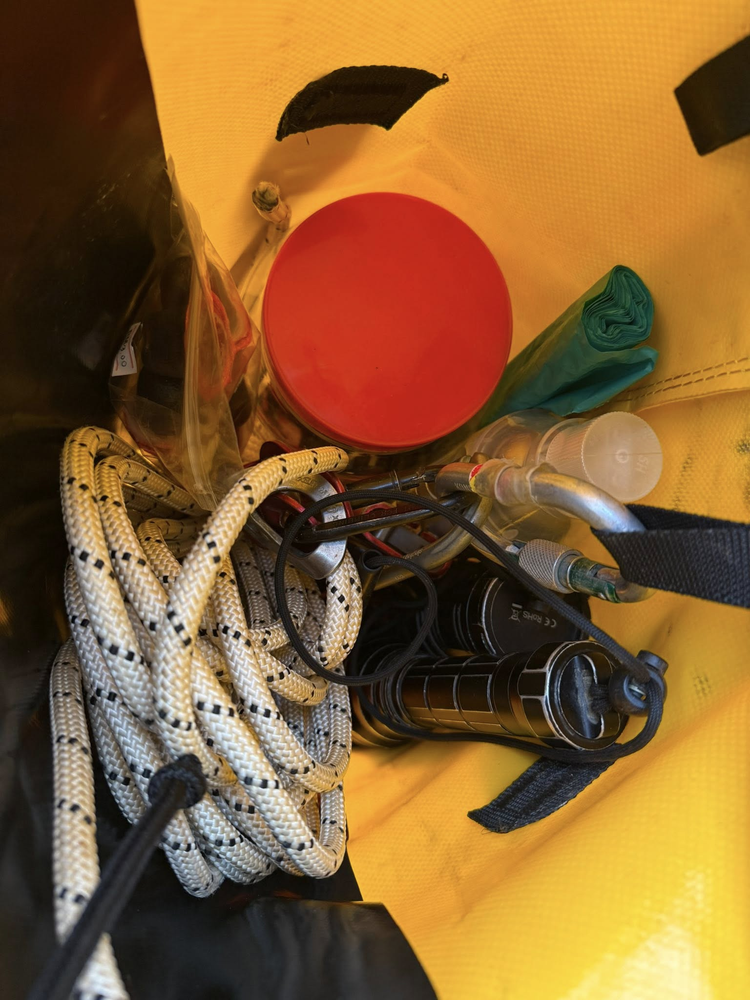
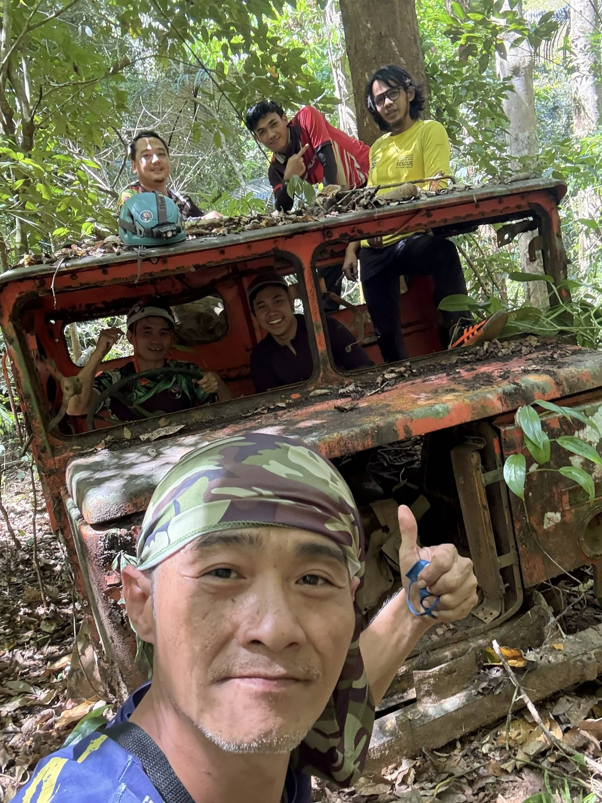
Languages
Malay, Chinese (Mandarin, Cantonese, Hokkien, Hakka), Thai, and basic English.
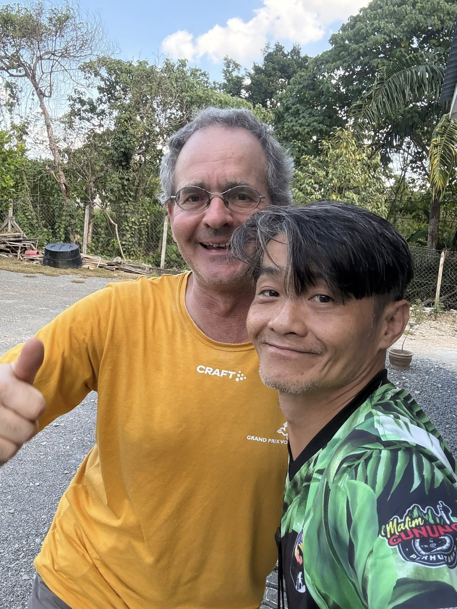
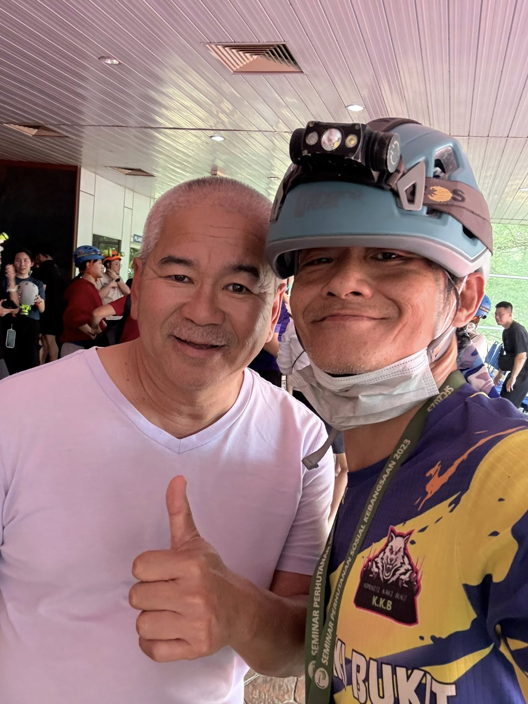
Professional Experience
He has more than 8 years of experience as a tour guide. He has guided a wide range of visitors, from young children to elderly tourists.
He is experienced in handling different situations and ensuring the safety of all participants.
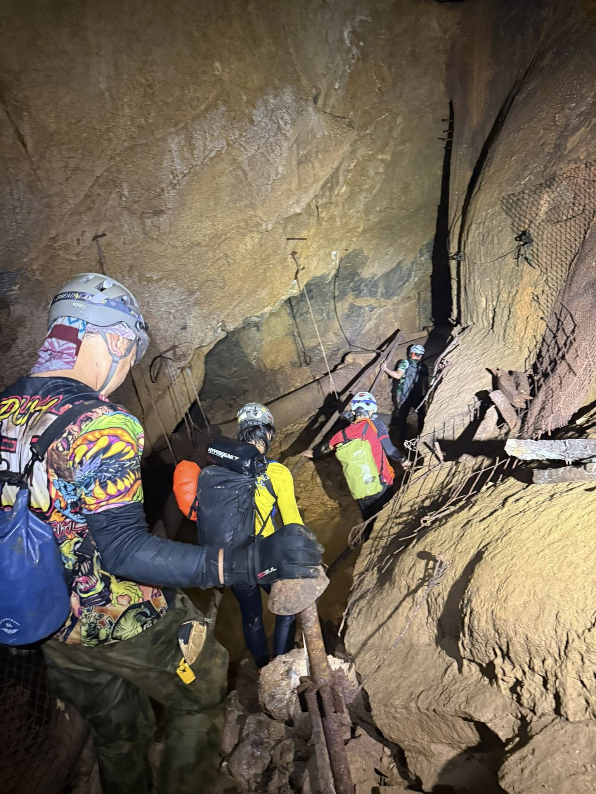
Safety & Tips
- Participants should be in good health condition
- Wear suitable clothing and proper shoes
- Follow the guide’s instructions at all times
- Not recommended for pregnant women or those with health issues
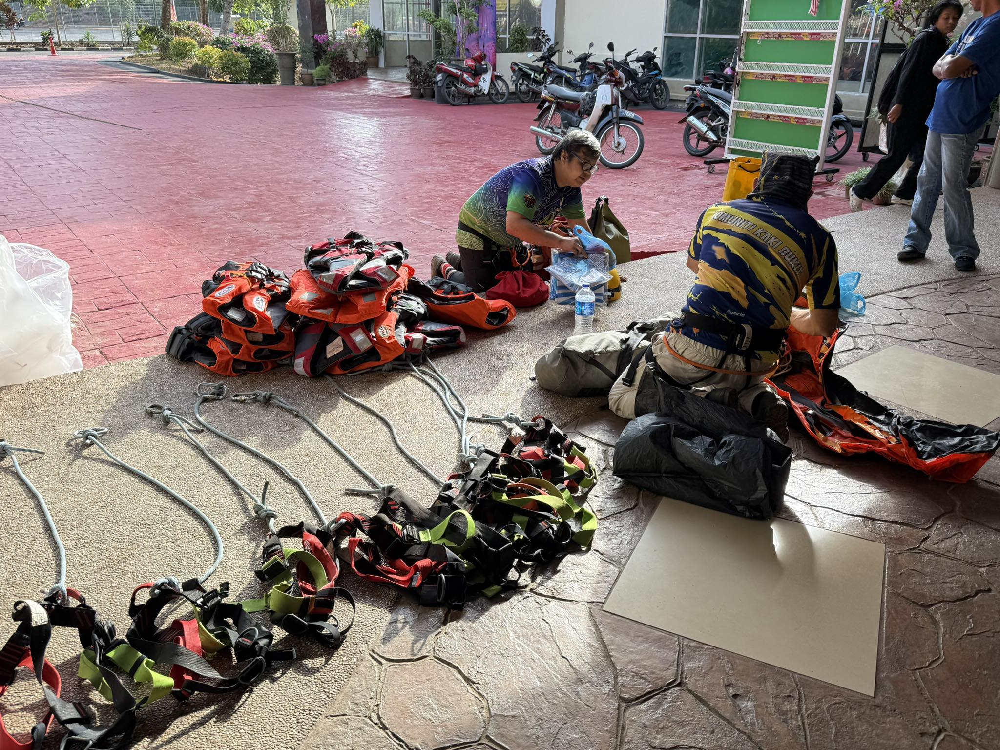
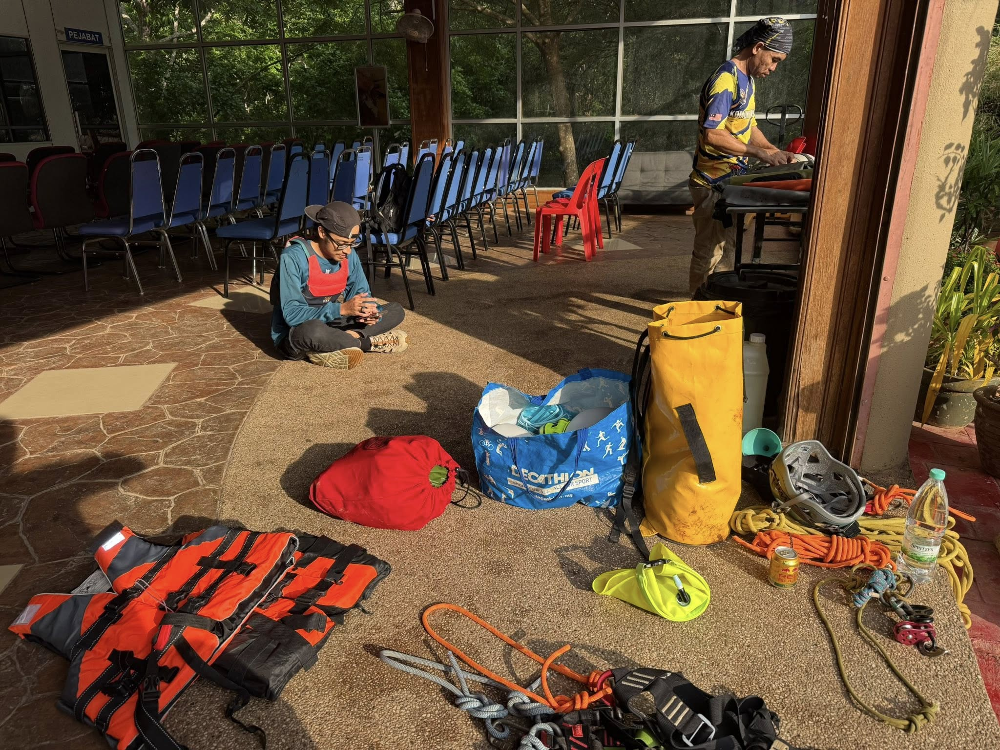
Tour Activities
Activities include cave exploration, hiking, water adventure, and customised tours based on visitors’ preferences.
Each tour can be adjusted depending on the group’s needs and difficulty level.
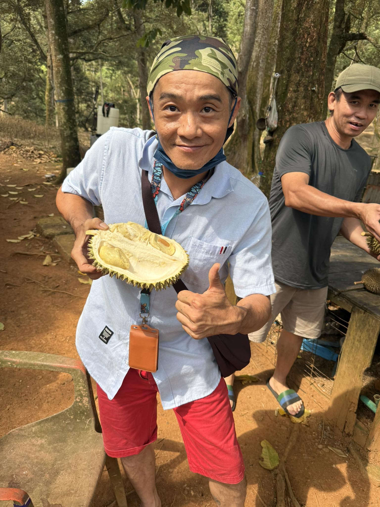
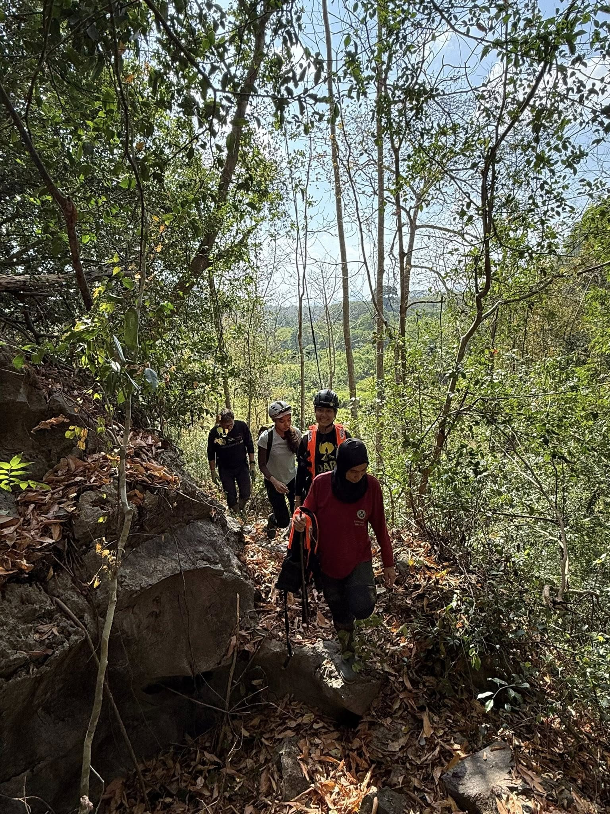
Tourist Experience
Visitors often describe him as friendly and approachable, making them feel comfortable like travelling with a friend.
Many tourists also appreciate his knowledge and professional guidance during the tour.

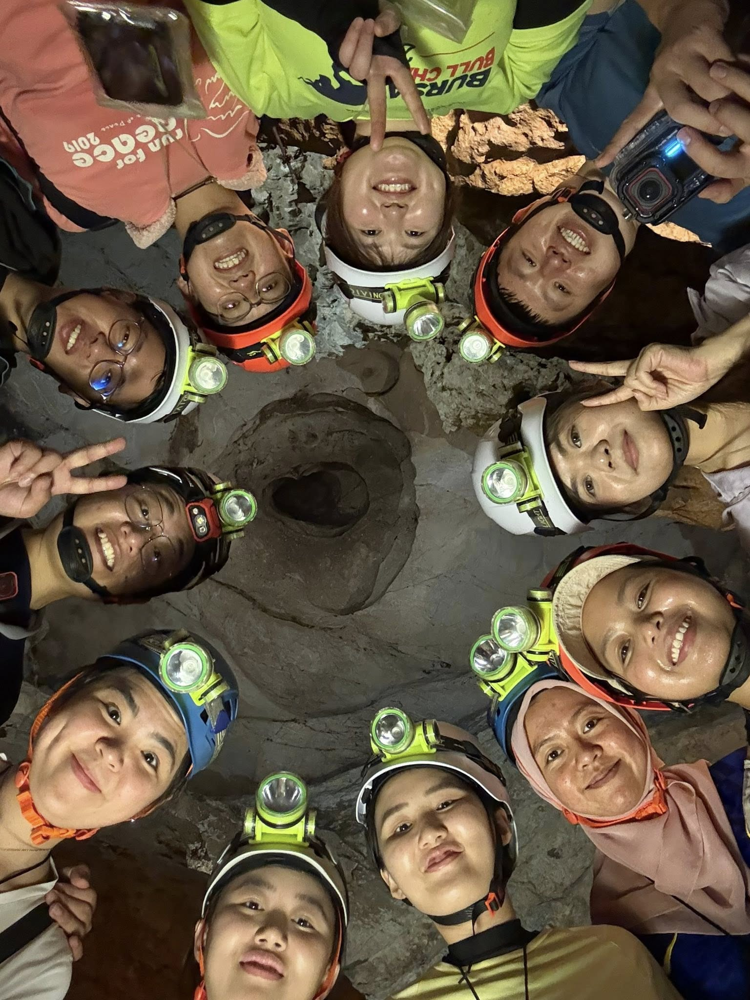